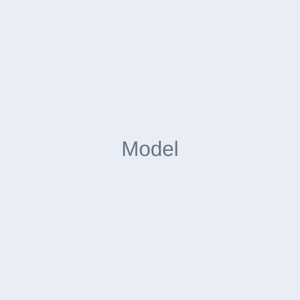

模型收藏
3 个模型已收藏的模型
螺旋花器.3mf作者 · Kai3MF · 98 × 98 × 180 mm
折纸氛围灯作者 · XK Official3MF · 约 7 小时 20 分钟
极简台灯.stl作者 · AlexSTL · 145 × 145 × 260 mm
摄像头画面暂不可用


未检测到 U 盘文件
搜索常见问题，或向我们提交反馈
请检查设备电源、网络连接和控制台中的设备状态。
可检查热床状态、首层设置和模型与热床的贴合情况。
请检查耗材是否卡住，并确认进料路径和喷嘴状态。
请检查网络连接及摄像头访问权限。
请保持设备在线并根据设备提示重新检查升级状态。
请确认手机号和网络状态，稍后重新获取验证码。
告诉我们遇到的情况，我们会尽快帮助你
在线支持时间：工作日 09:00–18:00
工作日 09:00–18:00
以上信息为产品原型模拟数据
切换语言后，应用内文字将使用所选语言显示
缓存数据可帮助应用更快加载预览内容
清理缓存不会删除账号信息、打印记录或已下载模型。
建议定期清理以释放设备存储空间
开启的项目将在下次执行设备校准时自动运行。
当前已是最新版本
© 2026 Axiloop. All rights reserved.
欢迎使用 Axiloop。以下条款说明服务范围、账号使用与设备内容相关约定。
我们提供设备连接、打印管理和相关应用服务。
请妥善保管账号信息，并以合法、合理的方式使用服务。
你应确保连接设备及提交内容具备合法使用权限。
服务可能因产品升级、维护或规则调整而发生变更。
如对条款有疑问，可通过应用内联系方式与我们沟通。
本政策说明 Axiloop 如何处理与你的账号、设备及应用使用相关的信息。
我们根据服务需要收集账号资料、设备状态及必要的使用信息。
相关信息用于提供服务、保障安全并改善产品体验。
我们采取合理措施保护信息，保存期限以服务和法规要求为准。
你可以依法查询、更正或申请删除相关个人信息。
政策更新后将在产品中展示最新版本及生效日期。